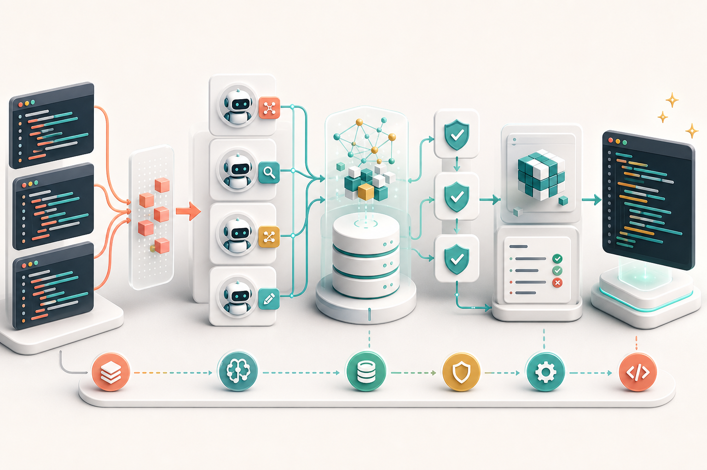

Software Engineering Research
Research artifacts on code clones, refactoring, and AI agents.
A compact index for three artifact sites covering LLM-based clone classification, structured clone refactoring workflows, and clone-related pull requests authored by humans and agents.

Paper Collection
Three related artifact pages for datasets, scripts, evaluation results, and reproduction materials.

Can LLMs Classify and Refactor Code Clones? An Empirical Study
Artifact page for clone classification and refactoring results across LLMs and traditional tools.

Beyond Prompting: An LLM-Driven Workflow for Code Clone Refactoring
Reproduction site for a staged LLM workflow with RAG, usefulness checking, compilation validation, and test-based verification on ArgoUML clones.
Do Agents Handle Code Clones Like Humans? An Exploratory Study on GitHub Pull Requests
Exploratory study comparing human, human-created agent-generated, and fully agent-authored clone refactoring pull requests.